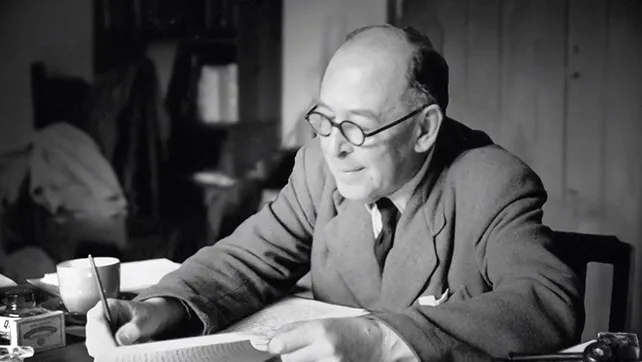

Sobre:
Clive Staples Lewis, comumente referido como C. S. Lewis, foi um professor universitário, escritor, romancista, poeta, crítico literário, ensaísta e teólogo anglicano irlandês. Durante sua carreira acadêmica, foi professor e membro do Magdalen College, tanto da Universidade de Oxford como da Universidade de Cambridge. Wikipédia
